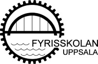
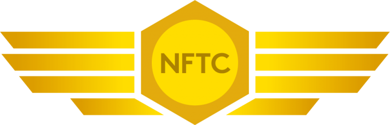

Fyriskskolan Uppsala 2001–2004
El-linjen - flygteknikprogrammet
Gymnasial utbildning som skulle leda till ett framtida yrke som Flygmekaniker

NFTC Luleå 2004 – 2005
Påbyggnadsutbildning flygtekniker
En eftergymnasial utbildning som skulle leda till ett framtida yrke som Flygtekniker
På grund av den rådande arbetsmarknaden ledde tyvärr dessa utbildningar inte någonstans

Medieinstitutet Göteborg 2021-2023
Webbutvecklare inom e-handeln
YH utbildning för ett framtida liv som Webbutvecklare